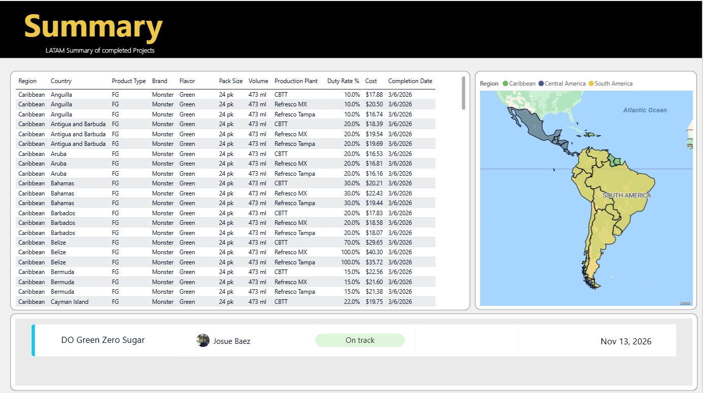

This dashboard is able to summarize all LATAM projects the Finance Operations team has put together.
This project displays the summary of all Latin America projects completed by the Finance Operations team. The dashboard provides easy access to information of completed cost porojects. In addition, the dashboard displays correlation between pack size, country, region towards the cost.
